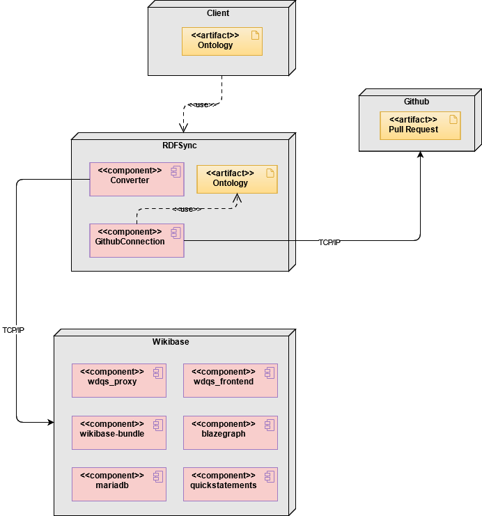

Welcome to RDFSync
RDFSync is a python library that synchronize your RDF based ontology from the changes made in a wikibase instance such as WBStack.
This library offers mainly the following features:
- Adding triples to the ontology.
- Updating triples of the ontology.
- Deletion of triples of the ontology.
- Communication with a wikibase instance through an API.
- Reading data from wikibase and parsing it to RDF.
- Creating the ontology in a specific Github repository.
RDFSync components

All communication with Github and Wikibase is done through the TCP / IP protocol.
- Client: it is the environment of the user that executes the application with the requested information such as the Wikibase endpoint, the url of the ontology ..., etc.
- Github: it is the user's repository where the new ontology will be created in a file in a new branch whose name is requested from the user.
- RDFSync: the application that is running
- Converter: it is the component that will be in charge of updating the user's ontology with its representation in the Wikibase instance, generating a new ontology in a format specified by the user but with ttl format by default.
- GithubConnection: it is the component that will be in charge of creating the ontology created in the previous step, the user wishes, in a specific repository in a specific branch of Github.
- Wikibase: contains all the basic components of a Wikibase instance, whether in Docker, WBstack [23] or others.